Complete & Test the Process
Insert records into the database, configure a Message step, send a notification email, and run the process end-to-end.
What you'll cover
- Insert records into database
- Configure a Message step
- Configure a Mail connector
- Execute the process in test mode to test database insert and email functionality
Insert records into database
The Map is now configured so that the incoming XML Account documents are being mapped over and converted to database Customer records. Connect Branch 1 to the Map and the Map to the Database Connector that was configured earlier.
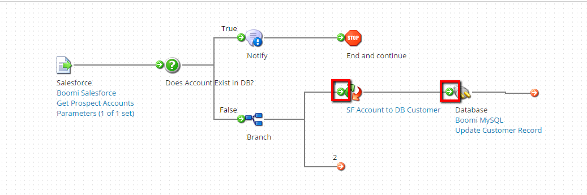
From the Logic pallet, drag and drop a Stop step on the canvas.
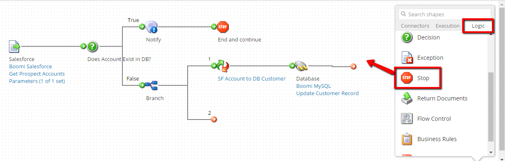
Click ‘OK’.
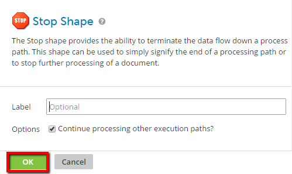
Connect the Database Connector to the Stop step. Then click ‘Save’ to save the process.
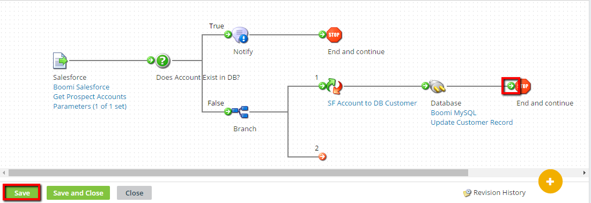
Configure a Message step
Now that the Customer records are inserted into the database, we’ll want to email a business user to serve as confirmation of successful insertion. The body of the email can be populated via a Message step. From the Execution pallet, drag and drop a Message step onto the canvas.
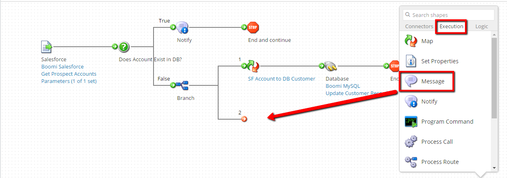
In the Message Properties pane, check off the ‘Combine documents into a single message’ option. Thus, if multiple documents are inserted into the database, this will allow for a single email message to reference all documents. Enter the following text within the Message field:
Account: {1} was inserted into the database-----<<hard carriage return>>
Then, click on the ‘Add Parameter’ button.
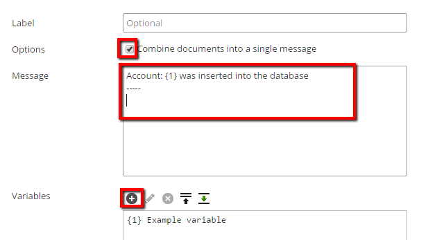
From the Parameter Value pane, choose ‘Profile Element’ as the Type and ‘XML’ as the Profile Type. For the Profile, browse for and load the ‘SF_Account_QUERY_Response’ profile from your ‘User-XX’ folder.
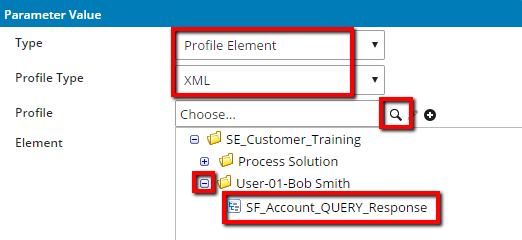
For the Element, click on the browse icon and choose ‘Name’. Click ‘OK’ to assign the ‘Name’ field to the Element and then click ‘OK’ again to return back to the ‘Message Properties' pane.
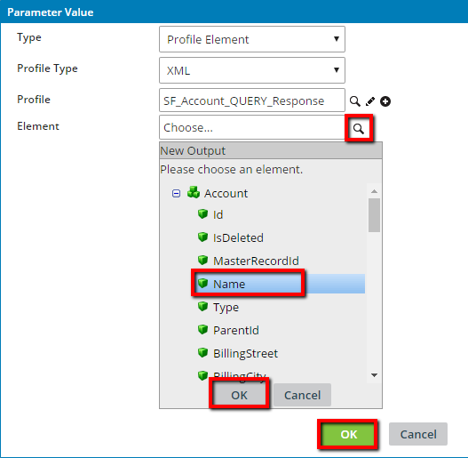
Click ‘OK’ to return to the process canvas.
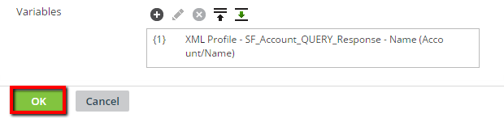
Connect Branch 2 to the Message Step. Click ‘Save’ to save the process.
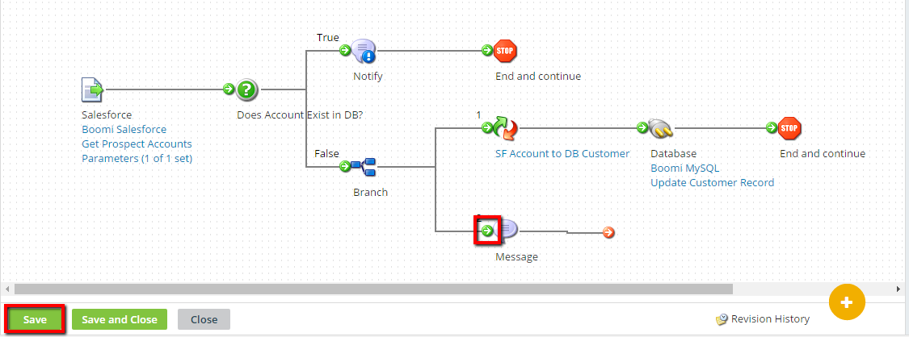
Configure a Mail connector
Drag and drop a Mail Connector onto the canvas.
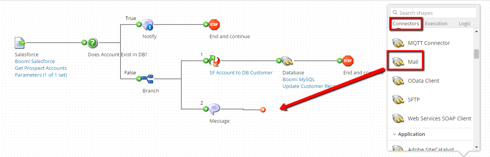
From the Connector Action pane, choose ‘Mail’ as the Connector (if you chose the default Connector above) and ‘Send’ as the Action. From the Connection, browse and load the ‘Boomi Gmail’ Connector housed in the SHARED folder.
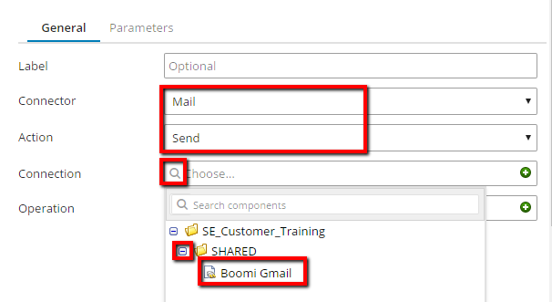
To create a new Operation, click on the (+) ‘Create a new component’ button.
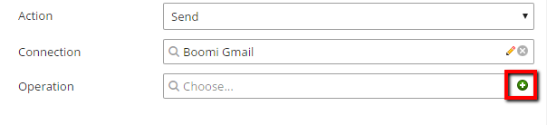
Type ‘Send Confirmation Email’ as the name of the Mail Operation. Type ‘Boomi Training’ as the ‘From’ field. For the ‘To’ field, enter your own email address. Type ‘Customer Status’ as the Subject and select ‘Inline’ as the Disposition. Click ‘Save and Close’ to return to the Connector Action pane.
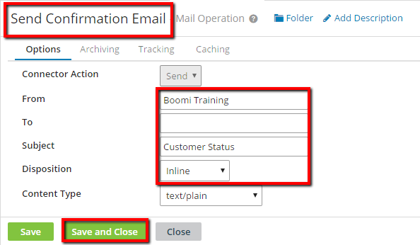
Click ‘OK’ to return to the process canvas.
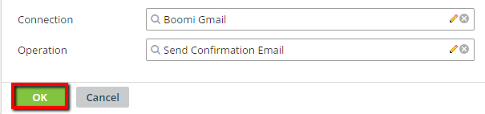
From the Logic pallet, drag and drop a Stop step onto the canvas.
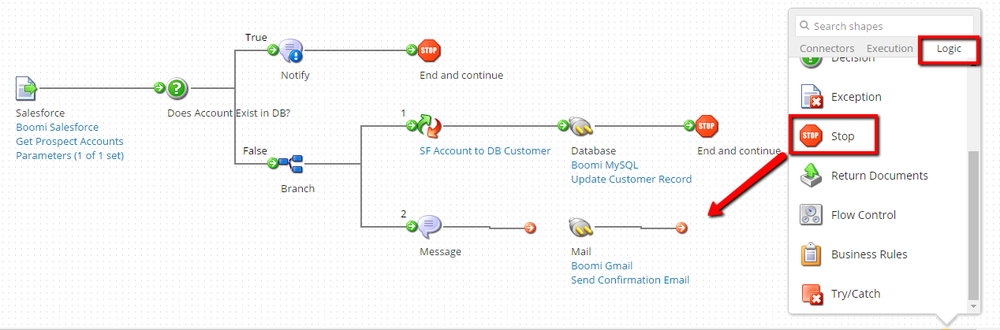
Click ‘OK’.

Connect the Message step to the Mail Connector and the Mail Connector to the Stop step. Click ‘Save’ to save the process.
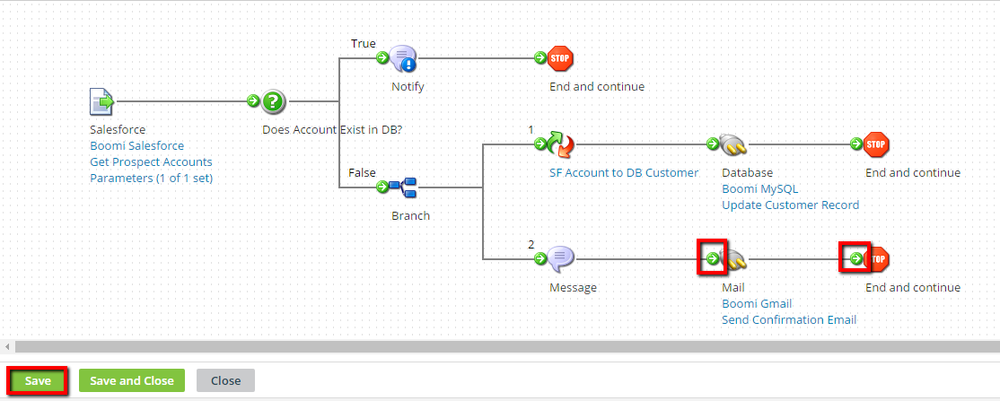
Execute the process in test mode to test database insert and email functionality
Click on the ‘Run a Test’ button in the upper-right of the Process Canvas. If you are then prompted to Save the process, click on the ‘Save button.
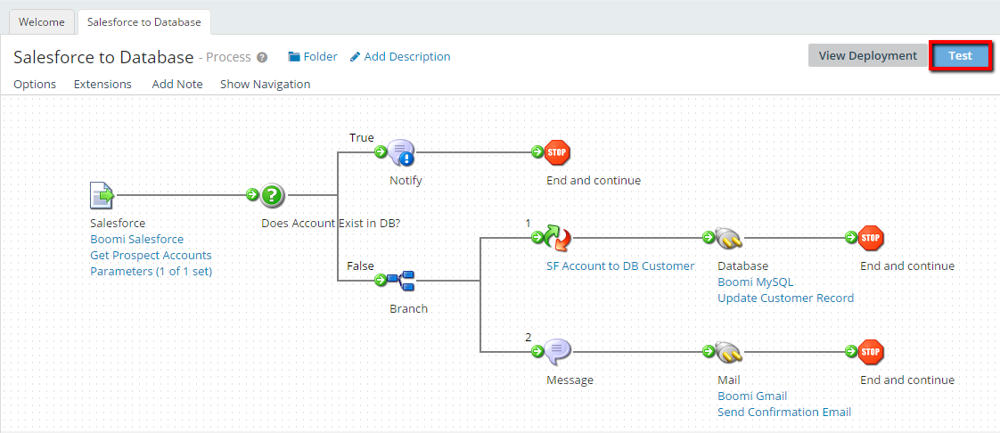
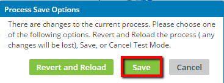
From the ‘Select Atom…’ dropdown, select the “workshop-atom” Atom and click ‘Run Test’.
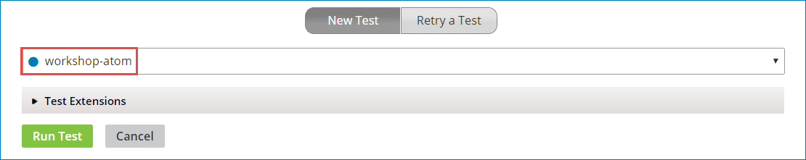
If the process was executed successfully, the steps in the process flow will be highlighted in green.
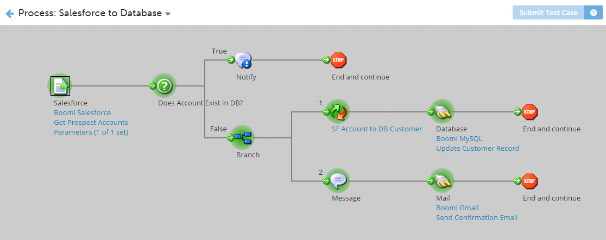
At any stage in the completed test execution, you can click on a particular step to view the Document state. Then, below in the ‘Test Results’ pane, you can click on the Connection Data tab and open the document for viewing.
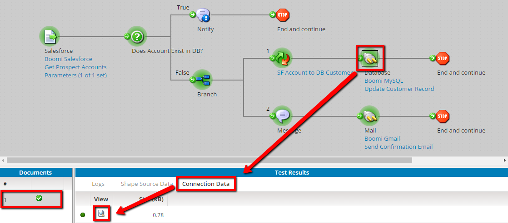
For example, selecting the Database connector and opening the document in the Test Results pane, displays the contents of the document. To return to Test Mode, click on the ‘Close Document Viewer’ button.
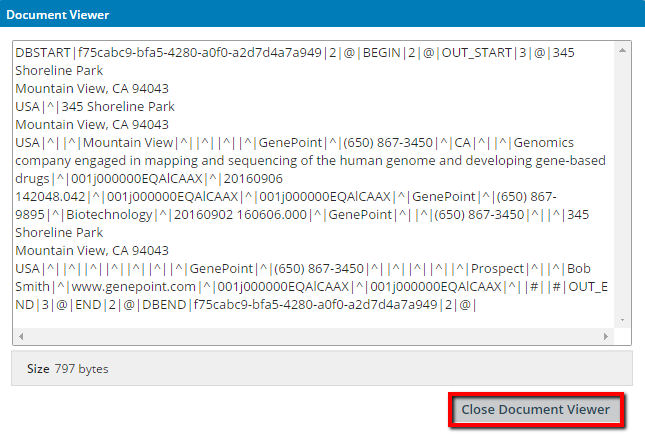
When finished observing the document(s) in Test Mode, click on the ‘Return to Edit Mode’ arrow link in the upper left of the Test Mode window.
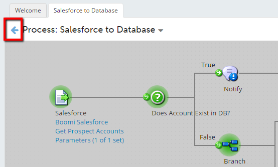